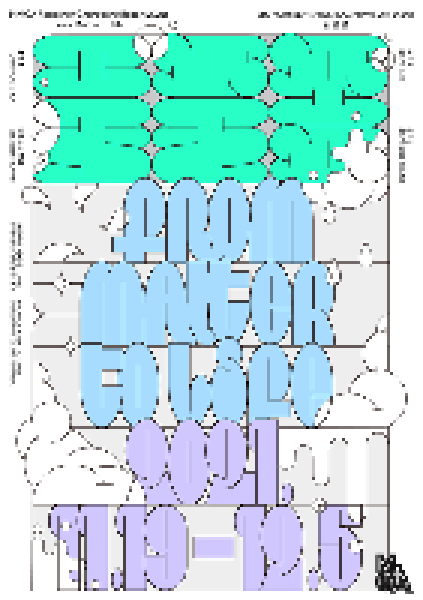

> title
창동레지던시 입주보고서 2021: 풀 물 몸
> content
‹창동레지던시 입주보고서 2021: 풀 물 몸›전은 '풀', '물', '몸'이라는 각기 다른 무게의 물질성을 탐구하면서 작가들의 한 해를 매듭짓는다. 오롯이 서 있는 세 단어는 모두 저 나름의
질량을 가진 채 공간을
차지한다. 전시에 참여하는 2021년 입주 작가들은 이 고유한 값을 가진 물질들을 작업의 언어로 불러오며 물질로서 존재하는 이미지를 관찰한다.
팬데믹 이후 미술계의 전시, 행사, 프로젝트가 온라인에서 데이터로 전환되면서 물질과 비물질의 경계에 관한 논의가
활발하다. 모든 형상이 데이터로서 장소를 이동하는 상황은 비물질에
대한 논의와 더불어 물질성 자체에
관한 질문까지 확장시킨다. 물질은 공간의 일부를 차지하면서 다양한 현상을 일으키는 실체이자 하나의 조건이다. 소위 '비물질적 공간'이라 불리는 온라인에서 가시화 되는 다양한 현상으로부터 우리는
어떻게 물질성을 이해할
수 있을까?
참여 작가(팀) 이소요, 정소영, 조영주, 데바시시 보라, 더 덕 어몽 어스, 새로운 질서 그 후...는 각기 다른 물질성에 천착해, 그것이 갖는 비물질적 에너지가 순환하는 장면을
포착한다. 물이 온도에 따라 기체
또는 고체로 형체를 달리 하듯이 물질에 잠재된 힘과 그 힘을 보존하는 외부 세계의 조건을 탐구하는 것이다. 이번 입주보고전은 여섯 명의 작가와 함께 이미지의 순환과 이동을 헤아릴 수 없는
환경에서, 우리가 만지고 쥘
수 있는 덩어리는 무엇인지 살펴본다. 더불어, '언택트', '비물질성'이 강조되는 환경에서 식물, (디지털) 신체, 바다 등 대상과 세계의 경계에 놓인 유동적인 대상에 집중하고자 한다.
